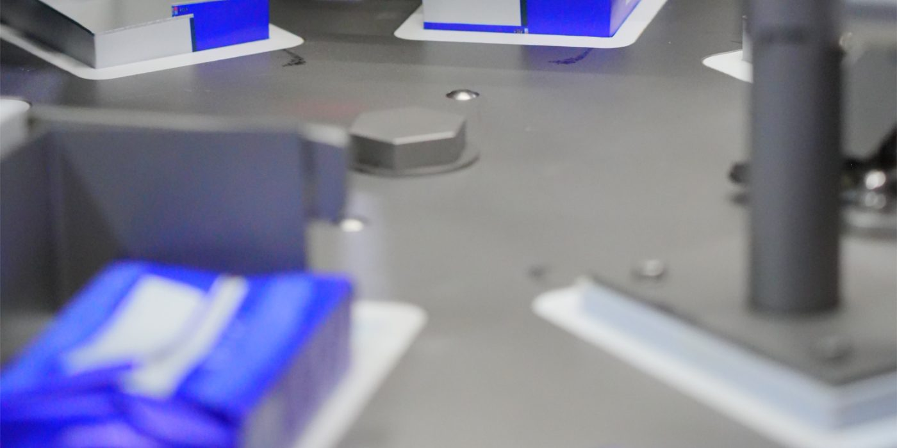

Ishlab chiqarish jarayoni
Xomashyo importidan tayyor mahsulot yetkazib berilgunga qadar har bir bosqich nazoratimiz ostida.
Mahsulot qanday tayyorlanadi
1. Xomashyo importi
Salfetka va margarin uchun xomashyo ishonchli xorijiy yetkazib beruvchilardan tanlab olinadi va import qilinadi.
2. Kiruvchi nazorat
Korxonaga kelgan har bir partiya tekshiriladi. Talablarga javob bermagan xomashyo ishlab chiqarishga yo‘l qo‘yilmaydi.
3. Qayta ishlash
Xomashyo zamonaviy uskunalarda qayta ishlanadi: salfetka materiali kesiladi va o‘raladi, margarin esa texnologik jarayon asosida tayyorlanadi.
4. Sifat nazorati
Tayyor mahsulot qadoqlashdan oldin yana tekshiriladi. Shu tariqa har bir partiya bir xil sifatda chiqadi.
5. Qadoqlash va jo‘natish
Mahsulot qadoqlanib, eksportga, o‘z tayyor mahsulotimiz liniyasiga yoki distribyutsiya tarmog‘i orqali ichki bozorga yo‘naltiriladi.
Qayta ishlangan mahsulot uch yo‘nalishda sotiladi
Eksport
Mahsulotning bir qismi xorijiy hamkorlarga eksport qilinadi.
O‘z tayyor mahsulotimiz
Bir qismidan kompaniyaning o‘zi BULUT brendi ostida tayyor quruq salfetka ishlab chiqaradi.
Ichki bozor
Qolgan qismi o‘z distribyutsiya tarmog‘imiz orqali mahalliy xaridorlarga sotiladi.

Sifat nazoratiSifat — asosiy ustuvorligimiz
Jarayonning har bir bosqichida sifatni nazorat qilamiz. Bu hamkorlarimizga har bir partiyada bir xil natijani kafolatlaydi.
- Xomashyo partiyalarini kirishda tekshirish
- Ishlab chiqarish jarayonida doimiy monitoring
- Tayyor mahsulotni jo‘natishdan oldin nazorat
- Sanitariya-gigiyena me’yorlariga rioya qilish
Korxonamizga tashrif buyurmoqchimisiz?
Hamkorlar uchun ishlab chiqarish bilan tanishtiruv tashrifini tashkil qilamiz.